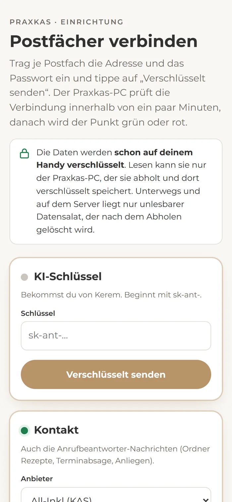
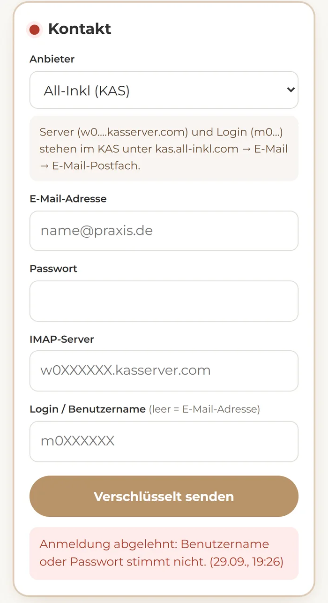

Alles andere ist vorbereitet. Es fehlen nur die Zugänge zu den Praxis-Postfächern. Du trägst sie über einen Link ein, den Kerem dir schickt, bequem vom Handy aus. Das dauert etwa eine Viertelstunde.
Deine Zugangsdaten werden schon auf deinem Handy verschlüsselt. Lesen kann sie nur der Praxkas-PC. Er holt sie ab, prüft die Verbindung und speichert sie dort wieder verschlüsselt. Auf dem Weg dorthin und auf dem Server liegt nur unlesbarer Datensalat, der nach dem Abholen gelöscht wird. Den Link bitte nicht weitergeben.
Öffne den Link, den dir Kerem geschickt hat, am besten auf dem Handy. Es geht aber auch am Computer. Du siehst vier Karten: den KI-Schlüssel und die drei Postfächer Kontakt, Info und Pflegeheime.
Du musst nicht alles auf einmal machen. Jede Karte wird für sich gesendet.

Der Anbieter ist bei jedem Postfach schon richtig eingestellt. Du trägst nur die Adresse und das Passwort ein.
Über Kontakt kommen auch die Anrufbeantworter-Nachrichten (Ordner Rezepte, Terminabsage, Anliegen). Ein eigener Telekom-Zugang ist nicht nötig.
Falls du ein Passwort neu setzen musst: Handys und Outlook, die das Postfach nutzen, brauchen danach auch das neue Passwort. Das gilt für alle Postfächer.
Tippe bei jeder Karte auf „Verschlüsselt senden“. Der Praxkas-PC prüft die Verbindung innerhalb von ein paar Minuten. Danach wird der Punkt grün, und dort steht, wie viele Mails im Postfach liegen.
Wird er rot, steht dort, woran es liegt, meistens am falschen Passwort-Typ. Dann die Daten korrigieren und nochmal senden. Dabei werden keine Mails gelesen und nichts als gelesen markiert.

Wenn alle Punkte grün sind, bist du fertig. Die Seite kannst du jederzeit wieder öffnen, um den Stand zu sehen oder ein Passwort zu ändern.
Wenn etwas hakt, schick Kerem einfach einen Screenshot.